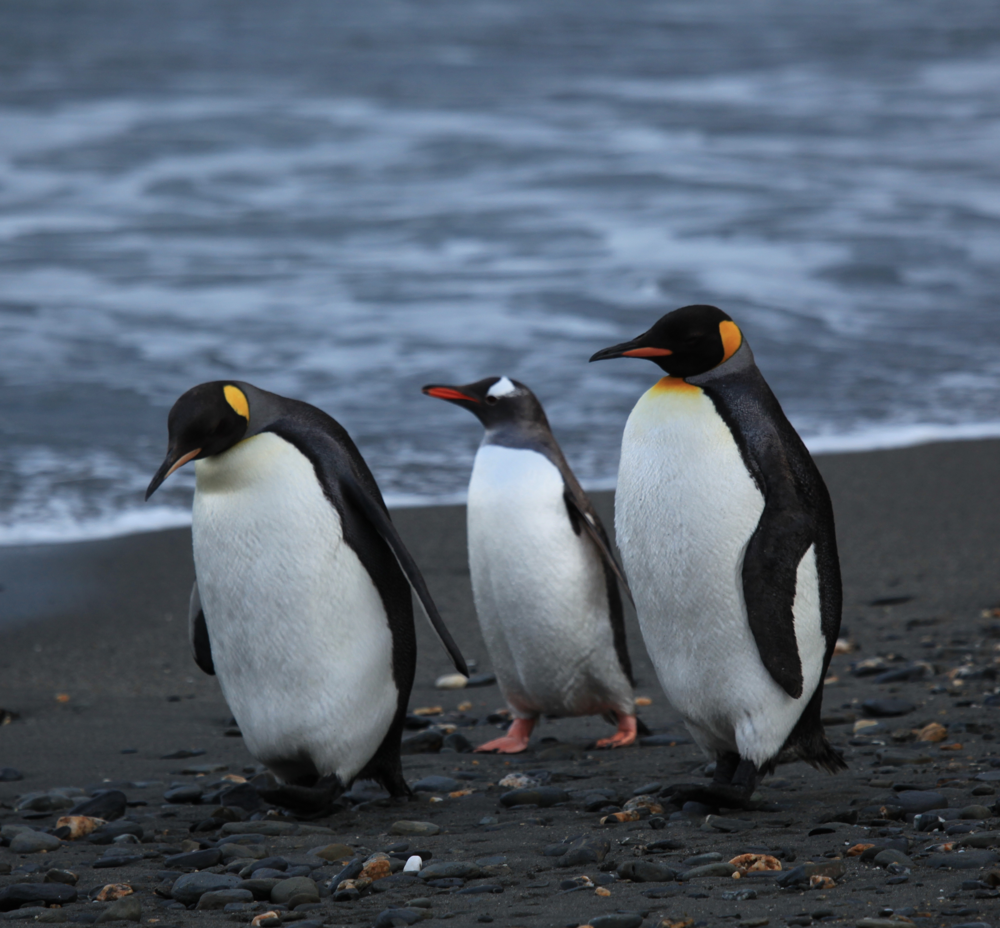

Animal Wiki
Please select an animal you would like to learn about.
Polarbear

The polar bear (Ursus maritimus) is a hypercarnivorous bear whose native range lies largely within the Arctic Circle, encompassing the Arctic Ocean, its surrounding seas and surrounding land masses. It is a large bear, approximately the same size as the omnivorous Kodiak bear (Ursus arctos middendorffi).[5] A boar (adult male) weighs around 350–700 kg (772–1,543 lb),[6] while a sow (adult female) is about half that size. Although it is the sister species of the brown bear,[7] it has evolved to occupy a narrower ecological niche, with many body characteristics adapted for cold temperatures, for moving across snow, ice and open water, and for hunting seals, which make up most of its diet.[8] Although most polar bears are born on land, they spend most of their time on the sea ice. Their scientific name means "maritime bear" and derives from this fact. Polar bears hunt their preferred food of seals from the edge of sea ice, often living off fat reserves when no sea ice is present. Because of their dependence on the sea ice, polar bears are classified as marine mammals
Penguin
Penguins (order Sphenisciformes, family Spheniscidae) are a group of aquatic, flightless birds. They live almost exclusively in the Southern Hemisphere, with only one species, the Galapagos penguin, found north of the equator. Highly adapted for life in the water, penguins have countershaded dark and white plumage, and their wings have evolved into flippers. Most penguins feed on krill, fish, squid and other forms of sea life caught while swimming underwater. They spend about half of their lives on land and half in the oceans.